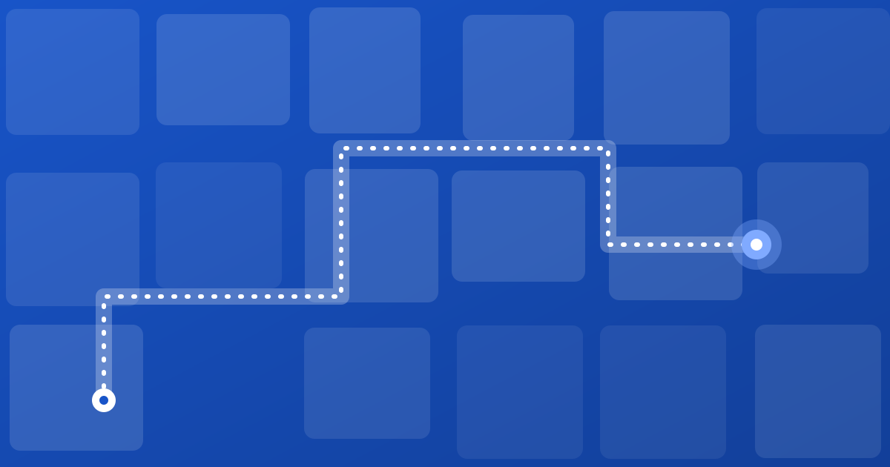

How to launch QR wayfinding in a week
A day-by-day plan to go from a floor plan to live QR directions: destinations, placement, a test walk and how to measure the result.

QR wayfinding sounds like a project. It is closer to a week of careful housekeeping. Here is a plan any venue team can follow.
Day 1: Gather the floor plan
Collect the best plan you have for each floor: CAD files, a PDF or even a clean photo. It does not have to be perfect. Mark which parts are public and which are staff-only.
Day 2: Write the destination list
List every place a visitor might want to reach, using the words visitors use. Group them: services, rooms, toilets, exits, parking. Aim for clarity over completeness; ten great destinations beat a hundred confusing ones.
Day 3: Map and review
The plan becomes a navigable map: corridors, doors, lifts and stairs connected so a route can be calculated. Review it on a phone, not only on a desktop.
Day 4: Choose QR locations
Walk the building as a first-time visitor. Place codes at entrances, lift lobbies, major junctions and parking exits. See our guide on where to place wayfinding QR codes for height and size, and how QR navigation works.
Day 5: Test walk
Ask someone who has never been inside to find five destinations using only the codes. Note every hesitation, wrong turn and unclear name, then fix them.
Day 6: Print and install
Print durable codes with a short line of text such as “Scan to find your way”. Install them at the agreed points and re-scan every one.
Day 7: Brief the team and go live
Give front-desk staff the one-sentence script and a place to report problems. Announce it on signage, appointment messages and your website.
After launch
- Review scans and popular destinations weekly for the first month.
- Add or rename destinations people search for but cannot find.
- Update the map when anything moves, so the codes never need reprinting.